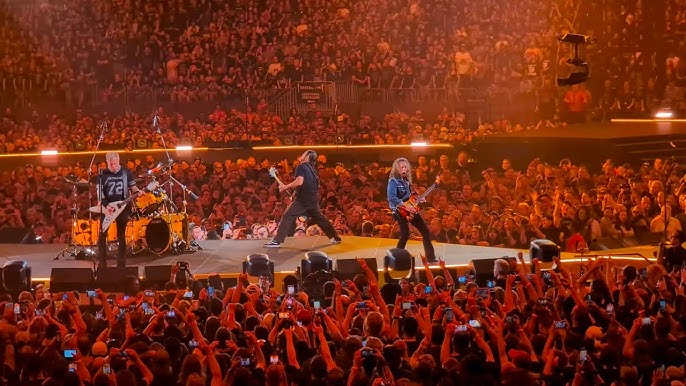

Metallica
On New Year’s Eve, Chuck Norris promised that he’d lose 20 pounds. The next morning he shaved his chest and smiled as he realized that he’d lost 30. Chuck Norris lost his virginity before his dad did. It takes Chuck Norris 20 minutes to watch 60 Minutes. Chuck Norris can divide by zero. Mission Impossible was originally set in Chuck Norris’s house.
Published: June 10, 2026
More info